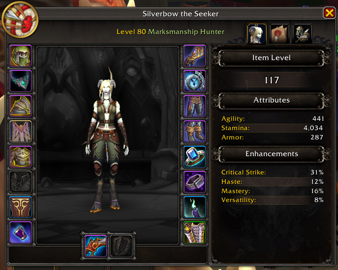

About Silverbow
Silverbow the Seeker
is a level 80 Marksmanship Hunter of the Khadgar realm, known for her
precision, patience, and steady aim. Fighting from a distance, she
relies on skill and awareness rather than raw force—striking with
accuracy when it matters most. Her name is inspired by Birgitte
Silverbow from my favorite novel series, The Wheel of Time by
Robert Jordan, reflecting both her role as an archer and a sense of
legacy carried into the game world.
With a focus on control and consistency, her journey is shaped by
discipline and adaptability. Whether tracking enemies or supporting
allies from afar, Silverbow remains calm under pressure—enduring,
adjusting, and delivering each shot with purpose.

Silverbow the Seeker · Level 80 Marksmanship Hunter · Khadgar Realm
Inspired by Birgitte Silverbow from The Wheel of Time by
Robert Jordan.
Silverbow’s characteristics
- Discipline: Marksmanship Hunter
- Affinity: Precision and ranged combat
- Combat Style: Controlled, long-range attacks
- Strengths: Accuracy and adaptability
- Focus: Consistency over raw power
- Realm: Khadgar
Silverbow’s Friends
-
Noor the Hallowed

Noor the Hallowed is a level 80 Elemental Shaman and one of Silverbow’s closest allies. Channeling the power of lightning and fire, she supports from a distance with controlled, elemental precision.
-
Neytire, Assistant Professor

Neytire is a level 80 Protection Paladin on the Khadgar realm and one of Silverbow’s most dependable allies. With strong defenses and unwavering presence, she protects her companions on the front line absorbing damage and maintaining control in even the most intense encounters.